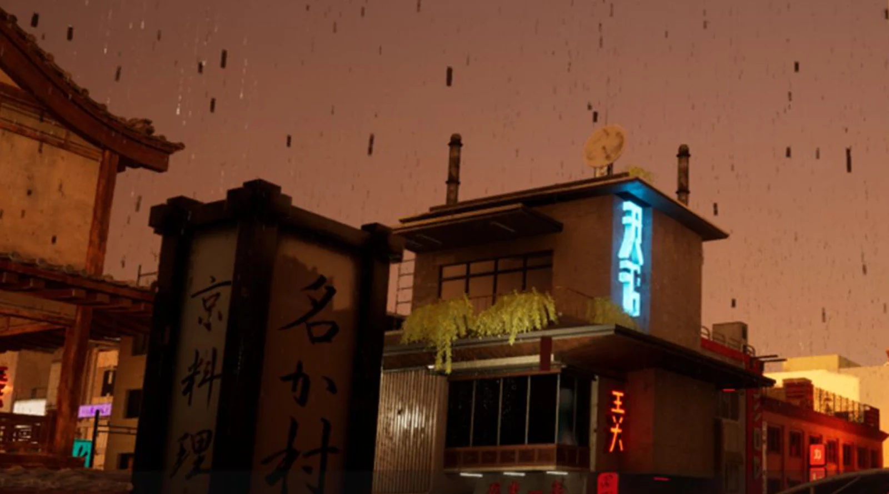
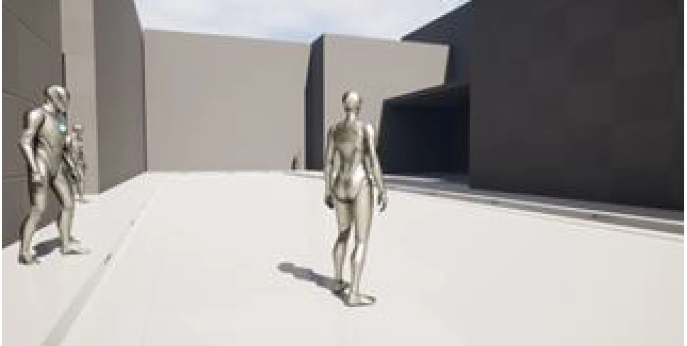
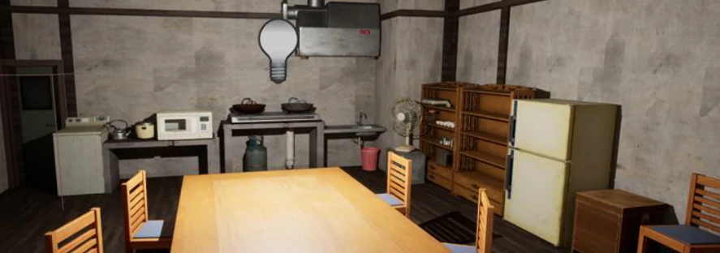
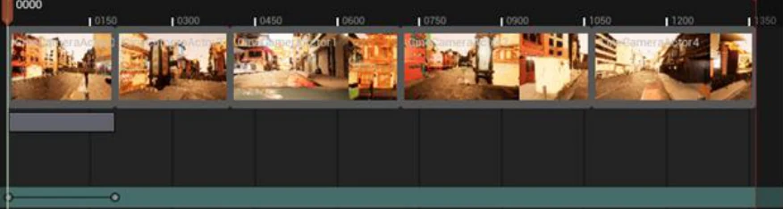
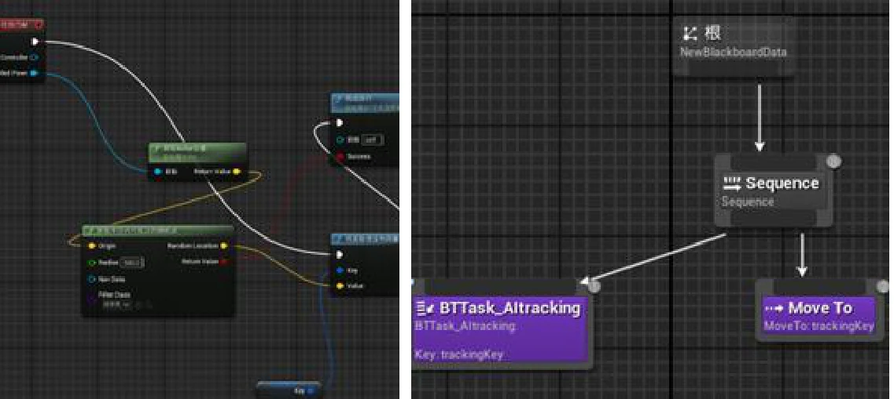

Block out
Establish the street network, building masses and the home’s interior structure.
Dusk outside. A lived-in space within.
ENVIRONMENT PROTOTYPEPROTOTYPE STILLS
ENVIRONMENT PROTOTYPE
01 / THE IDEA
An Unreal environment study combining a Fukuoka-inspired street district with an accessible traditional Japanese home.
The project draws on Nakasu and Hakata streets and the urban spaces of Yakuza 5. White-box layouts develop into a rainy dusk neighbourhood with a bathhouse, restaurant, arcade-inspired landmark and connecting streets. The home interior takes structural cues from the Hazuki Residence in Shenmue, while props and lighting give each space a distinct atmosphere.
Establish the street network, building masses and the home’s interior structure.
Replace simple forms with assembled assets, signage and rainy dusk lighting.
Use cinematic camera passes and document the NPC navigation configuration.
CURRENT SCOPE
The portfolio shows street and interior assembly, blockout iteration, Sequencer camera work and an NPC navigation setup. These are documented environment and implementation studies; a complete gameplay loop, browser build and live NPC behaviour have not been verified in this case.
02 / MY CONTRIBUTION
My portfolio work focuses on level layout, environment assembly and scene presentation. It records the progression from white boxes to dressed streets and interiors, plus camera sequencing and navigation setup. Referenced layouts and third-party character or environment models are credited separately from that work.
Develop blockout layouts and organise exterior landmarks and connected residential spaces.
Arrange third-party models and props, replace blockout assets and develop the project’s dusk atmosphere.
Document Sequencer camera tracks and an AI-controller, NavMesh and behaviour-tree setup for local NPC movement.
03 / A CLOSER LOOK
Select an image. Take a closer look.




This is a non-commercial environment study. Yakuza / Like a Dragon and Shenmue are documented visual and spatial references; their settings, characters and referenced assets remain third-party work. The project uses assembled character and environment models and does not claim original modelling of every asset. Selected captures show the authored Unreal scene and its process, rather than redistributing model files. No official affiliation or endorsement is implied.
BACK TO THE COLLECTION